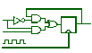
Please send all questions & assignments to:

dsolarek@eng.utoledo.edu
and
rameet3350@gmail.com
Digital Systems Design
Analyzing and Synthesizing Combinational Logic Circuits
Introduction
This chapter introduces some Standard graphic symbols and switching circuits for Boolean operations(AND, OR, etc.). It also covers logic circuit design, compressing truth table and k-maps, glitches and their causes, types of functions and delays, programmable logic devices (PLDs), and positive logic convention and direct polarity indication. The BCD to 7-segment Display System case study at the end of the chapter shows a variety of ways to design a specified digital problem.
The information on this page parallels that presented in Chapter 3 of your Digital Design Essentials text.
Learning Objectives
As described above, the purpose of this lesson is to introduce you to some Standard graphic symbols and switching circuits, and develops a background for designing complex digital circuits. At the end of this lesson, you should be able to:
- Identify IEEE graphic symbols for basic Boolean functions.
- Analyze different types of switching circuits.
- Analyze and Design Logic circuits.
- Compress truth tables and K-maps using different compression techniques.
- Identify the hazards in logic circuits, and their effects.
- determine the output delay for complex circuits.
- Implement functions on Programmable logic devices.
- Convert circuits in PLC system to DPI system, and vice-versa.
Graphic Symbols for logic functions
Together with the American National Standards Institute (ANSI), the Institute of Electrical and Electronic Engineers (IEEE) has developed a standard set of logic symbols. The most recent revision of the standard is ANSI/IEEE Std 91-1984, IEEE Standard Graphic Symbols for Logic Functions. It is compatible with standard 617 of the International Electro-technical Commission (IEC), and must be used in all logic diagrams drawn for the U.S. Department of Defense.
Switching Circuits
Switching functions can be implemented using simple switches. In digital electronic circuits, transistors are used as simple switches in circuits very similar those which follow. The functions NOT, AND and OR can be easily implemented with two simple switches
In the case of the AND function, the two switches have
to be in series with each other; in the case of the OR function, the two
switches have to be connected in parallel. For the NOT function, the
switch is connected in parallel with the output. NAND and NOR gates can be
constructed in a similar way.
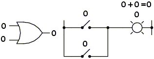
Switching circuits for these gates are already in the text book. Here we
can see the Switch Equivalents of some laws and theorems of Boolean
Algebra.
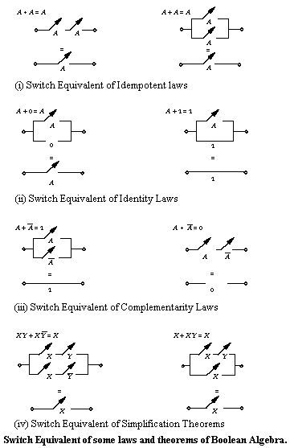
To convert a gate circuit to a Boolean expression, label each gate output with a Boolean sub-expression corresponding to the gates' input signals, until a final expression is reached at the last gate.
Designing Logic Circuits
F = A + BC or à 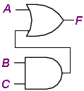
| A | B | C | BC | A+BC |
| 0 | 0 | 0 | 0 | 0 |
| 0 | 0 | 1 | 0 | 0 |
| 0 | 1 | 0 | 0 | 0 |
| 0 | 1 | 1 | 1 | 1 |
| 1 | 0 | 0 | 0 | 1 |
| 1 | 0 | 1 | 0 | 1 |
| 1 | 1 | 0 | 0 | 1 |
| 1 | 1 | 1 | 1 | 1 |
Relay Logic Circuits
To convert a Boolean expression to a relay logic circuit, evaluate the expression using standard order of operations: multiplication before addition, and operations within parentheses before anything else.
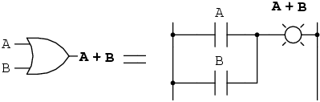
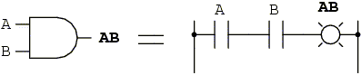
IC Logic Circuits
- Start with a Boolean Function
- Minimize it in literal form
- Substitute graphic symbols for the operators
- Show all signals
- Interconnect the gates
- Clean up or simplify
To convert a Boolean expression to a gate circuit, evaluate the expression using standard order of operations: multiplication before addition, and operations within parentheses before anything else.
Example:
Step 1: Boolean Function
F= AB+BC(B+C)
Step 2: Minimize it
F= AB+BC(B+C)
= AB + BBC + BCC
= AB + BC + BC
= AB + BC
F = B(A + C)
Step 3, 4, 5, 6: Substitute graphic symbols, Show signals, Interconnect gates, and Clean up
Begin with the sub-expression "A + C", which is an OR gate:
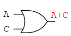
The next step in evaluating the expression "B(A + C)" is to multiply
(AND gate) the signal B by the output of the previous gate (A + C)
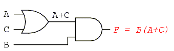
This circuit is much simpler than the original, having only two logic gates instead of five. Such component reduction results in higher operating speed (less delay time from input signal transition to output signal transition), less power consumption, less cost, and greater reliability.
Demorgan Equivalent Symbols and Equivalent signal lines
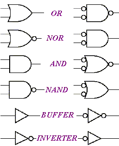
Examples:
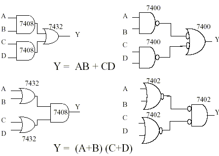
Compressing Truth Tables and Karnaugh maps
Why compress Truth Tables
Reduction in the hardware of a logic circuit can be achieved by simplifying its Boolean expression(s). Main Reasons to compress truth tables/reduce logic are:
- Reduction in the number of gates or ICs and interconnection wires/tracks.
- Smaller physical space (in PCB or IC) is occupied by the design.
- Higher circuit speed.
- Lower power consumption and heat generated.
- Easier testing and finding fault.
- Lower cost.
- Improved reliability of the circuit due to lower gate count as well as number of interconnections.
Compression Techniques
Besides K-maps, discussed in the previous chapter and also below, here are some other compression techniques.
Map Entered Variable (MEV)
Tabular Methods
- Quine-McClusky (Q-M) Method
(Suitable for computer implementation.
Partially heuristic method where optimal solution is not guaranteed.) - Petricks Algorithm (A modified Quine-McClusky method.)
Advantage of Quine-McClusky over K-maps
- It can be computerized
- It can handle functions of more than six variables
Quine-McClusky method (Overview)
- Given the minterms of a function
- Find all prime implicants (steps 1 and 2)
- Partition minterms into groups according to the number of 1’s
- Exhaustively search for prime implicants
- Find a minimum prime implicant cover (steps 3 and 4)
- Construct a prime implicant chart
- Select the minimum number of prime implicants
Karnaugh maps
A Karnaugh map (K-map) is a pictorial method used to minimize Boolean expressions without having to use Boolean algebra theorems and equation manipulations. A K-map can be thought of as a special version of a truth table.
Using a K-map, expressions with two to four variables are easily minimized. Expressions with five to six variables are more difficult but achievable, and expressions with seven or more variables are extremely difficult (if not impossible) to minimize using a K-map.
Characteristics:
- K-map represents the truth table or canonical forms.
- Its squares or cells are labeled such that adjacent squares differ by one variable change only.
- K-map squares are filled with 1s or 0s either from the truth table output values or minterms (maxterms).
- SOP expression for the output is obtained by ORing the squares containing 1s and then simplifying by looping.
- POS expression for the output is obtained by ANDing the squares containing 0s and then simplifying by looping.
Looping a pair of adjacent 1s in the K map eliminates the variable that appears in complemented or un-complemented form.
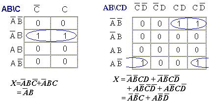
Looping a quad of adjacent 1s in the K map eliminates the two variables that appear in both complemented and un-complemented forms.
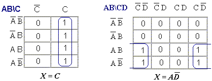
Looping an octet of adjacent 1s in the K map eliminates the three variables that appear in both complemented and un-complemented forms.
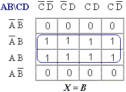
When a variable appears in both complemented an un-complemented form within the loop, that variable is eliminated from the expression. Variables that are the same for all squares of the loop must appear in the final expression.
Don’t care conditions are the input conditions of a logic circuit for which there are no specified outputs. Make output for don’t care condition to X. This will produce best K-map looping and hence simplest output expression.
- Construct the K map.
- Place the ones and X in in the squares corresponding to the 1s and X on the truth table.
- Place 0s in all other spaces.
- Loop any octet including X.
- Loop any quad that contains one or more 1, but not all that have not already been used.
- Look for the ones that are adjacent to only one other 1 or X and loop these pairs together. At least one 1 in this pair, should be an un-looped 1.
- Loop any pairs to include any ones that have not already been used.
- Form the OR sum of all the terms generated by each loop.
Glitches
A hazard is a condition in a logically correct digital circuit or computer program that may lead to a logically incorrect output. A Glitch is a momentary change of signal at the outputs.
These can be useful while designing pulse shaping circuits. But they may give incorrect results and unwanted switching at the outputs. These occur because delay paths in the circuit experience different propagation delays.
If logic "makes a decision" while output is unstable or hazard output controls asynchronous inputs. (These respond immediately to changes rather than waiting for a synchronizing signal called a clock)
Solutions:
- Wait until signals are stable (by using a clock)
- Add redundant terms.
- Never use circuits with asynchronous inputs
- Design hazard-free circuits.
Static hazards: Condition where the output should stay constant, but it doesn't
Static 1 hazard: In some circuits, output should be a constant 1. But when one input is changed, the output drops to 0 and then recovers to 1. This cannot occur in a POS implementation.
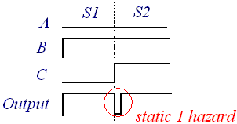
Refer to the figure shown above. Say there are two sets of input combinations to a digital circuit, S1(eg. 010), and S2(eg. 011), different in only one variable, such that, both inputs force the output to be a '1'(high). When we switch from one input combination to another, the output changes momentarily to a '0'(low). This is known as static 1 hazard.
Static 0 hazard: In some circuits, output should be a constant 0. But when one input is changed, the output rises to 1 and then drops back to 0. This cannot occur in a SOP implementation.
Say there are two sets of input combinations to a digital circuit, S1(eg. 010), and S2(eg. 011), different in only one variable, such that, both inputs force the output to be a '0'(low). When we switch from one input combination to another, the output changes momentarily to a '1'(high). This is known as static 0 hazard.
If more than one input variable changes "simultaneously" there is no way to guarantee that such glitches will not occur.
Example: Static 1 Hazard detection and
prevention.
Consider
F
= A’B + AC
Consider the input transitions as shown in the figure.
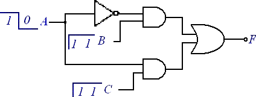
Due to the finite propagation delay of the gates, there is a momentary '0' in the output, as shown in the diagram below.
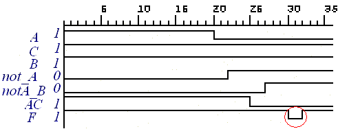
Detection of Static 1 Hazards:
A static one hazard can be detected by observing the products used for the function on a K-map. If any two logically adjacent cells with a '1' output are not covered by a common product or implicant, a static hazard can occur when a single input change moves from one cell to the other.
Now, Plot A’B + AC in the KMAP
|
à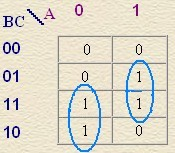 |
|||||||||||||||||
Minterm 3(011) is covered by product A'B and minterm 7(111) is covered
by product AC. There is no product which covers them both. See figure
below:
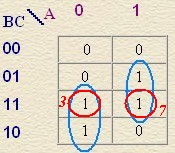
A static hazard can also be detected algebraically. If only the distributive law is used to convert the SOP form to a POS form and the resulting POS form contain the sum of a variable and its complement, then this is an indication of a static 1 hazard. Although algebraically the sum of a variable and its complement is always '1', due to different delay paths in the circuit it might appear that for a short interval both the variable and its complement are 0. In the example above,
f(A,B,C)=A'B+AC = (A'B+A)(A'B+C)=(A'+A)(B+A)(A'+C)(B+C)
has a sum (A'+A). Due to variable delays in different branches of the circuit, this sum may be effectively zero for very short time intervals. If all other sums are '1', then the output should stay '1', but since they are all ANDed with (A'+A), its momentary zero would cause an output glitch which would be a static 1 hazard.
Prevention of Static 1 Hazards:
A static 1 hazard an be prevented by adding a product terms so that all pairs of logically adjacent cells with a '1' output have at least one common product covering them. This can be accomplished by using all prime implicants in the SOP form rather than using a minimized SOP form. In the example above the hazard free form will be f(A,B,C) = A'B+AC + BC where the product BC has been added to cover both minterms 3 and 7. Note also that the hazard condition occurred with transitions between ABC = 111 and 011, and this product output does not change during this transition.
Adding BC
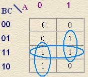
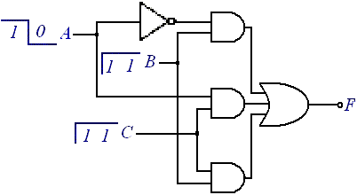
Here is the waveform for the output F after adding the AND Gate for BC
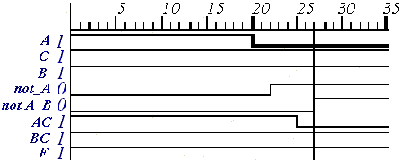
Which is without any momentary transition at the change of the input signals.
A SOP form with AND-OR implementation can never have a static '0' hazard. If the output is a zero both before and after a single variable change, then all products must be '0' both before and after the single variable change, so no input to the OR gate will change and ho hazard can occur. Everything stated above for the two level AND-OR implementation is also true for the two level NAND-NAND implementation. For a large number of variables it is possible to have two logically adjacent minterms with '1' output that are each covered by multiple products but not both covered by a common product. This will still cause a hazard condition. The hazard will only be avoided by having a common product covering the pair, not just by having multiple products cover each minterm.
Example: Static 0 Hazard detection and prevention.
A Static 0 hazard may occur in a two level product of sums (POS) implementation.
Consider an OR-AND (POS) implementation with the following
characteristics:
à For the current input
conditions only one OR gate has a logic '0' output. This causes the output
of the AND to be '0'.
à A single input variable
changes which "simultaneously" causes the first OR gate output to a logic
'1' and causes another OR gate output to go to a logic '0'.
If the first OR gate changes before the second, the AND will have two '1' inputs for a short time and an output glitch will occur.
For example, consider the function F = (A+B)(A'+C)
(Which is same as the example in static 1 Hazard, but in POS form: A'B+BC)
implemented in this minimized POS form. In this case U=(A+B) and V=(A'+C) so F=(U)(V). When the inputs change from ABC=100 to ABC=000, a glitch as described above can occur. If it does not occur on this transition, it will occur on the reverse transition from ABC=000 to ABC=100.
Detection and Prevention of Static 0 Hazards:
A static zero hazard can be detected by observing the sums used for the function on a k-map. If any two logically adjacent cells with a '0' output are not covered by a common sum, a static hazard can occur when a single input change moves from one cell to the other. In the example above, the cells for maxterms 0 and 4 both contain '0', but maxterm 0 is covered by sum (A+B) and maxterm 4 is covered by sum (A'+C) . There is no sum which covers them both.
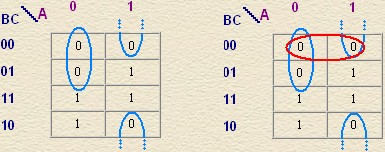
A static hazard can also be detected algebraically. If only the distributive law is used to convert the POS form to a SOP form and the resulting SOP form contains the product of a variable and its complement, then this is an indication of a static 0 hazard. Although algebraically the product of a variable and its complement is always '0', due to different delay paths in the circuit it might appear that for a short interval both the variable and its complement are 1. In the example above
F = f(A,B,C) = (A+B)(A'+C) = A(A'+C)+B(A'+C) = AA' + AC + BA' +BC
has a product (AA'). Due to variable delays in different branches of the circuit, this product may be effectively one for very short time intervals. If all other product are '0', then the output should stay '0', but since they are all ORed with (AA'), its momentary one would cause an output glitch which would be a static 0 hazard.
Prevention of Static 0 Hazards:
A static 0 hazard an be prevented by adding sum terms so that all pairs of logically adjacent cells with a '0' output have at least one common sum covering them. This can be accomplished by using all prime implicants in the POS form rather than using a minimized POS form. In the example above the hazard free form will be f(A,B,C) = (A+B)(A'+C)(B+C) where the sum (B+C) has been added to cover both maxterms 0 and 4. Note also that the hazard condition occurred with transitions between ABC = 100 and 000, and this product output does not change during this transition.
A POS form with OR-AND implementation can never have a static '1' hazard. If the output is a '1', both before and after a single variable change, then all sums must be '1' both before and after the single variable change, so no input to the AND gate will change and no hazard can occur.
Everything stated above for the two level OR-AND implementation is also true for the two level NOR-NOR implementation. For a large number of variables it is possible to have two logically adjacent maxterms with '0' output that are each covered by multiple sums but not both covered by a common sum. This will still cause a hazard condition. The hazard will only be avoided by having a common sum covering the pair, not just by having multiple sums cover each maxterm.
Dynamic hazards
Just like Static - 0 and Static - 1 can be described from the following figure,
| 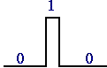 |
 |
| Static - 0 | Static - 1 |
Dynamic Hazard can be analyzed from these output waveforms.
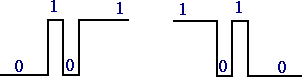
Dynamic Hazards
Dynamic Hazard due to change in an input causes a triple change in the output. It occurs only when there are three or more paths between the input and the network output when the effect of the input change reaches the output at three different times.
Sample circuit for Dynamic Hazard:
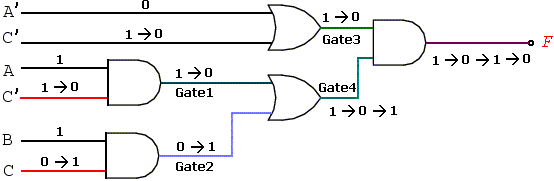
Waveforms showing dynamic hazard occurrence.
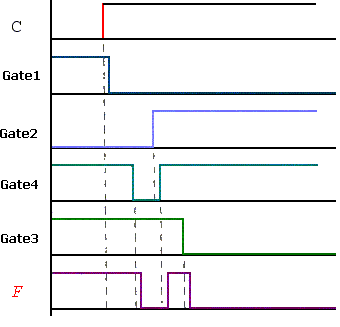
A second-order SOP circuit that is free of all static hazards in the 1s will be free of all static and dynamic hazards.
Example: Develop a Hazard-free realization for the following excitation map.
| WX\YZ | 00 | 01 | 11 | 10 | ||||||||||||||||
| 00 |
|
|||||||||||||||||||
| 01 | ||||||||||||||||||||
| 11 | ||||||||||||||||||||
| 10 | ||||||||||||||||||||
F=W.Z+X.Y.Z+W.Y.Z
Detection: There are two hazards
-
between 5 and 13
-
between 11 and 15.
Prevention:
Add two more groups to remove these hazards.
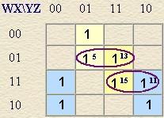
Functions and Delays
Simple
- Can be Single product term (A.B)
- Can be Single sum term (A+B)
- Terms can be in complemented form (X.Y.Z, X.Y.Z, X+Y+Z)
Decoder - Incorporating
Simple Functions
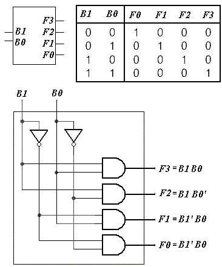
Designing
Circuits with Decoders
Example:
Consider a Full Adder
Truth Table with Carry output and Sum output
|
A |
B |
Cin |
S |
Cout |
|
0 |
0 |
0 |
0 |
0 |
|
0 |
1 |
0 |
1 |
0 |
|
1 |
0 |
0 |
1 |
0 |
|
1 |
1 |
0 |
0 |
1 |
|
0 |
0 |
1 |
1 |
0 |
|
0 |
1 |
1 |
0 |
1 |
|
1 |
0 |
1 |
0 |
1 |
|
1 |
1 |
1 |
1 |
1 |
We can implement this 3 variable
function using 3-8 Decoder
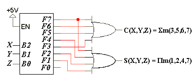
Complex
After DeMorgan's Theorem, the function must contain
- atleast one product term (A.B) AND
- atleast one sum term (A+B)
Programmable Logic Devices
Programmable logic devices (PLD) are ICs with internal logic gates connected by electronic fuses. These are general purpose devices that can be programmed to implement combinational logic, or combinational logic and sequential state machines. Various benefits are:
- Instant manufacturing turnaround
- High level of flexibility
- Rapid prototyping
- Ease of design changing
- Low startup costs
- Low financial risk
The fuses can be programmatically blown to obtain specific circuit configurations, for different logic.
General structure:
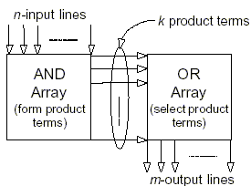
We will study how to realize logic functions using three types of PLDs. They differ in the placement of fuses in the AND-OR array.
Programmable Read-only Memory (PROM):
- Has a fixed AND array and programmable fuses for the output OR gates.
- PROM implements Boolean functions in sum of minterms.
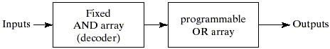
Programmable Array Logic (PAL):
- Has a fused programmable AND array and a fixed OR array.
- The AND gates are programmed to provide the product terms for the Boolean functions that are logically summed in each OR gate.
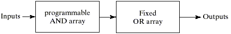
Programmable Logic Array (PLA):
- Most flexible, where both AND and OR arrays can be programmed.
- The product terms in the AND array may be shared by any OR gate to provide the required sum of products implementation.
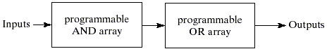
For a PLA, k < 2n.
Sequential logic devices also called registered PLDs are also available.
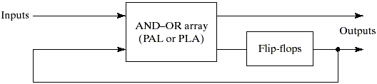
Designing a logic circuit using a PLA
Steps Involved: Given a function or a group of functions.
-
Minimize function(s) using any method (K-map, McCluskey, etc). => minimal SOP form.
-
Minimize the number of product terms
-
Number of literals is not important.
-
Check each function and its complement.
-
-
If multiple functions, look for common product terms.
-
Derive PLA table
-
Draw PLA diagram:
-
# of AND gates = # of distinct product terms
-
# of OR gates = # of outputs.
-
Draw a X for each connection
-
Example:
Given a group of functions.
F0 = A + B' C'
F1 = A C' + A B
F2 = B' C' + A B
F3 = B' C + A
Step 1: Minimize functions
Functions already in minimized form.
Step 2: Look for common product terms:
A B, B C, A C, B C, A
Step 3: PLA table with Shared Product Terms.
| Product term | Inputs | Outputs | |||||
| A | B | C | F0 | F1 | F2 | F3 | |
| A B | 1 | 1 | - | 0 | 1 | 1 | 0 |
| B C | - | 0 | 1 | 0 | 0 | 0 | 1 |
| A C | 1 | - | 0 | 0 | 1 | 0 | 0 |
| B C | - | 0 | 0 | 1 | 0 | 1 | 0 |
| A | 1 | - | - | 1 | 0 | 0 | 1 |
Step 3: Draw PLA diagram.
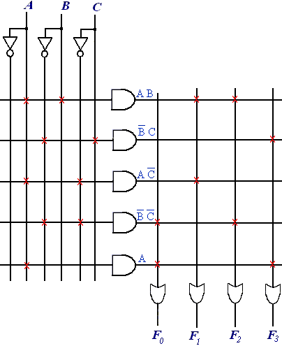
Some PLAs consists of a programmable AND array (logical product generator), a programmable OR array (logical sum generator) and also XOR gates (which are used as controllable inverters).
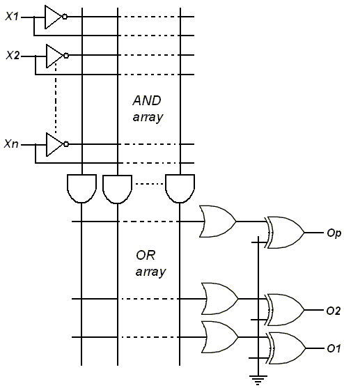
Designing using a PROM
PROM are devices with fixed AND array (which is a decoder) and programmable OR array. These have n input lines and m output lines. The AND array (decoder) generates all 2n possible minterm products of its n inputs (often referred to as n-to-2n decoder).
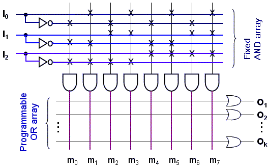
2n
x m ROM
=> 2n
words, each word m bits
=> 2n
x m bits
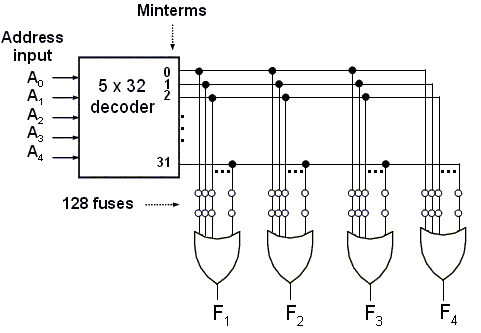
Logic construction of a 32 x 4 ROM
Example
F1(A,B,C) = A.B + B'.C
F2(A,B,C) = (A+B'+C).(A'+B)
F3(A,B,C) = A + B.C
First, we convert each function to canonical SOP form.
F1(A,B,C) = A.B + B'.C
= A.B.C' + A.B.C + A'.B'.C + A.B'.C
= S
m(1,5,6,7)
F2(A,B,C) = (A+B'+C).(A'+B)
= (A+B'+B).(A'+B+C').(A'+B+C)
= P
M(2,4,5) = S
m(0,1,3,6,7)
F3(A,B,C) = A + B.C
= A.B'.C' + A.B'.C + A.B.C' + A.B.C + A'.B.C
= S
m(3,4,5,6,7)
Realizing the above logic functions(F1, F2, and F3)
using PROM(8 x 3 ROM)
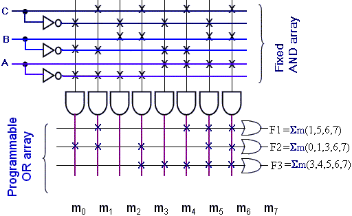
OR
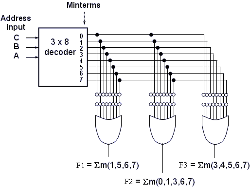
Designing using a PAL
PAL has programmable AND array and fixed OR array. It is less general than PLA but easier to manufacture and design. Here the product terms belonging to different OR gates, cannot be shared.
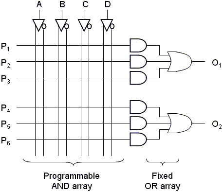
Example:
Here we convert each function to minimal SOP form.
F1(A,B,C,D) = A'.B'.D' + B'.C.D' + A'.B.C.D
F2(A,B,C,D) = A'.B + B'.C.D'
F3(A,B,C,D) = A'.B'.D' + B'.C'.D' + A'.B.C.D
Realizing the above logic functions(F1, F2, and F3)
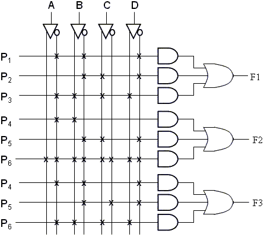
Binary Addition
Integer addition is one of the most important operations in digital computer systems because the performance of processors is significantly influenced by the speed of their adders. Arithmetic circuits are excellent examples of combinational logic design. But doing things fast requires more logic and thus more space. Here we go through some of the necessary Binary Number Representations relating to Sign & Magnitude, Ones Complement and Twos Complement as we design circuits for Binary Addition, i.e. a Full Adder.
Negative Numbers
Representation of positive numbers is same in most systems. The major differences are in how negative numbers are represented. There are three major schemes to repressent negative numbers.
- sign and magnitude
- ones complement
- twos complement
Sign and Magnitude Representation
A 4 bit machine word can represent 16 different values (0000, 0001, 0010 .. 1111). Out of these 16 different values, roughly half are positive and half are negative.
i.e.
0100 means
+ 4
and 1100 means
- 4
The Most Significant bit determines the sign.
The figure below shows the meaning of all the sixteen values, from 0000 to 1111.
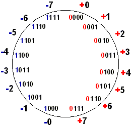
The High order bit(MSB) determines the sign:
0 =
positive (or zero),
1 =
negative
whereas the three low order bits
determines the magnitude:
0 (000) thru 7 (111)
Sample Calculations
| result sign bit is
the same as the operands' sign
|
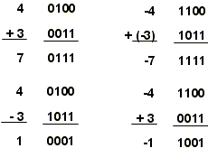 |
| when signs differ, operation is subtract, sign of result depends on sign of number with the larger magnitude |
Thus addition/subtraction of these binary numbers is cumbersome and one must compare magnitudes to determine the sign of result.
Ones Complement
One complement can be evaluated using the following formula
N = (2n - 1) - N
where N is positive number, and N is its negative 1's complement
eg. 1's complement of 7
N = (2n
- 1) - N
= (24
- 1) - 7
= (10000
- 00001) - 0111
= (1111) - 0111
= 1000
This can also be evaluated by simply computing bit wise complement of 0111, i.e binary representation of 7.
0111
1000
The figure below shows the meaning of all the sixteen values, from 0000 to 1111.
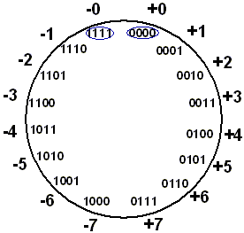
Here 0100 = + 4 and 1011 = - 4
Sample Calculations
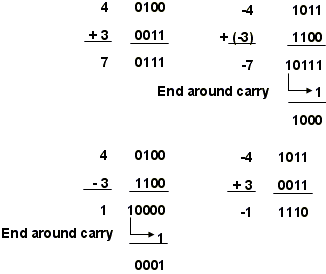
Thus subtraction implemented by addition & 1's complement is simpler, but there are two representations of 0 (0000, and 1111). This causes some problems.
Twos Complement
This is like ones complement, except that the result is shifted one
position clockwise
i.e. 1100 = - 4
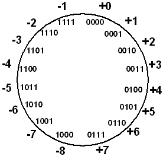
This has only one representation for 0 and has one more negative number than positive number
This can also be obtained by adding 0001 to the ones complement.
Twos complement = bitwise complement + 1
Sample Calculations
| If carry-in to sign = carry-out then ignore carry | 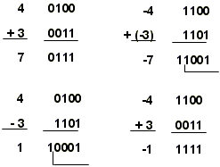 |
| if carry-in differs from carry-out then overflow |
Using Twos-complement representations, the addition scheme is much simpler which makes twos complement the most common choice for integer number systems within digital systems.
Overflow Conditions
The two overflow conditions are
- when we add two positive numbers and get a negative number or
- when we add two negative numbers and get a positive number.
The figure below illustrates these conditions.
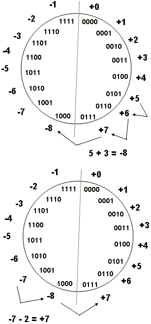
Overflow occurs when carry in to sign does not equal carry out.
Binary Addition using Half Adder
With twos complement numbers, addition is sufficient.
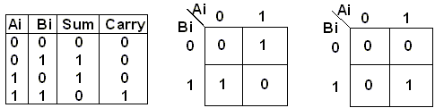
Sum = Ai .
Bi + Ai
. Bi
=
Ai
xor Bi
Carry = Ai .
Bi
Thus the Schematic for the Half-adder can be designed using an AND Gate and an XOR Gate as follows:
Full Adder
When we are interested in adding more than two bits, we need a Full Adder.
Truth Table and K-maps for a Full Adder are as follows.

Thus,
S = CI xor A xor B
CO = B . CI + A . CI + A . B = CI . (A + B) + A . B
The figure shows, that the standard approach utilize 6 Gates to implement the Full Adder.
Alternative Implementation of Full Adder
As,
A . B + CI . (A + B) = A . B + B . CI + A . CI
The Full Adder can be designed using two half adders ( 2 x 2 Gates) and an Or Gate. This brings down the implementation size to just 5 Gates!
A Cascaded Multi-bit Adder is shown below.
Adder / Subtractor Circuit Implementation
Subtraction can be performed using the above adder with minor modifications. We can add two numbers using the formula, A+B. Similarly, we can Subtract two numbers using the same formula, but using negative B.
i.e. A - B = A + (-B).
= A + (2's complement of B)
thus, A - B =
A
+ ( B +
1
)
We can Add two numbers using similar equation,
i.e. A + B = A + (B + 0)
The 0 or 1 in the above equation can be added using the Carry input of the Full - Adder block. Consider the following circuit.
Whenever the Add/Subtract signal is high, the Carry input is 1 and the MUX selects B input. Thus a 1 is added and B is selected as second input to the Full-Adder block. Thus the circuit realize the function A + ( B + 1 ), which is subtraction. Thus the circuit acts as a Subtractor, when the Add/Subtract input is 1.
Whenever the Add/Subtract signal is low(0), the Carry input is 0 and the MUX selects B input. Thus a 0 is added and B is selected as second input to the Full-Adder block. Thus the circuit realize the function A + (B + 0), which is addition. Thus the circuit acts as a Adder, when the Add/Subtract input is 0.
We use two ICs, IC 7483 which is an Adder, and IC 74157, which is a MUX.
Circuit Implementation
Carry Look-Ahead Adder
One type of circuit where the effect of gate delays is particularly clear, is an ADDER. The 4-bit adder that we designed and implemented above is called a ripple-carry adder because the result of an addition of two bits depends on the carry generated by the addition of the previous two bits. Thus, the Sum of the most significant bit is only available after the carry signal has rippled through the adder from the least significant stage to the most significant stage. This can be easily understood if one considers the addition of the two 4-bit words: 1 1 1 12 + 0 0 0 12, as shown in the following figure:
In this case, the addition of (1+1 = 102) in the least significant stage causes a carry bit to be generated. This carry bit will consequently generate another carry bit in the next stage, and so on, until the final carry-out bit appears at the output. This requires the signal to travel (ripple) through all the stages of the adder. As a result, the final Sum and Carry bits will be valid after a considerable delay. The disadvantage of the above ripple-carry adder is that it can get very slow when one needs to add many bits. this reduces the maximum frequency as which one can operate this adder. For fast applications, a better design is required. The carry-look-ahead adder solves this problem by calculating the carry signals in advance, based on the input signals. It is based on the fact that a carry signal will be generated in two cases: (1) when both bits Ai and Bi are 1, or (2) when one of the two bits is 1 and the carry-in (carry of the previous stage) is 1.
Thus, one can write,
COUT = Ci+1 = Ai . Bi + (Ai Å Bi) . Ci
where "Å" stands for exclusive OR or XOR. One can write this expression also, as
Ci+1 = Gi + Pi . Ci
Where,
Gi = Ai . Bi , the Generate term and
Pi = (Ai Å Bi) , the Propagate term.
Assuming that the delay through an AND gate is one gate delay and through an XOR gate is two gate delays, the Propagate and Generate terms only depend on the input bits and thus will be valid after two and one gate delay, respectively. If one uses the above expression to calculate the carry signals, one does not need to wait for the carry to ripple through all the previous stages to find its proper value. Applying this to a 4-bit adder,
C1 = G0 + P0 C0
C2 = G1 + P1 C1 = G1 + P1 G0 + P1 P0 C0
C3 = G2 + P2 C2 = G2 + P2 G1 + P2 P1 G0 + P2 P1 P0 C0
C4 = G3 + P3 C3 = G3 + P3 G2 + P3 P2 G1 + P3 P2 P1 G0 + P3 P2 P1 P0 C0
the carry-out bit, Ci+1, of the last stage will be available after four delays (two gate delays to calculate the Propagate signal and two delays as a result of the AND and OR gate). The Sum signal can be calculated as follows:
Si = Ai Å Bi Å Ci = PiÅ Ci
Thus, each of the carry equations can be implemented in a
two-level logic network.
The Sum bit will thus be available after two additional gate delays (due to the XOR gate) or a total of six gate delays after the input signals Ai and Bi have been applied. The advantage is that these delays will be the same independent of the number of bits one needs to add, in contrast to the ripple counter.
The carry-lookahead adder can be broken up in two modules: (1) the Partial Full Adder, which generates Si, Pi and Gi as defined by the above equations; and (2) the Carry Look-ahead Logic, which generates the carry-out bits according to the above equations. The 4-bit adder can then be built by using 4 Partial Full Adders and the Carry Look-ahead logic block. The complete architecture is as follows:
The disadvantage of the carry-lookahead adder is that the carry logic is getting quite complicated for more than 4 bits. For that reason, carry-look-ahead adders are usually implemented as 4-bit modules and are used in a hierarchical structure to realize adders that have multiples of 4 bits.
| Lesson b | Lesson 2 | |
| There have been visitors since 11/26/2003 | ||